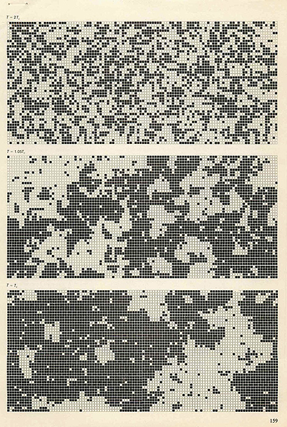
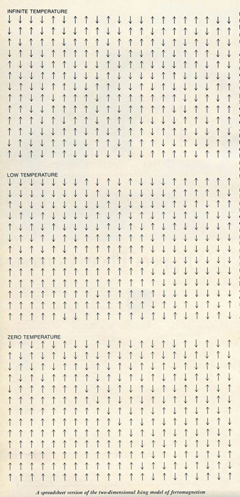
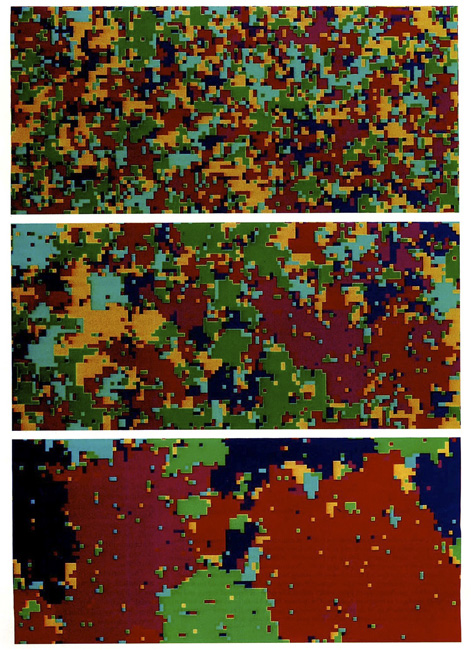
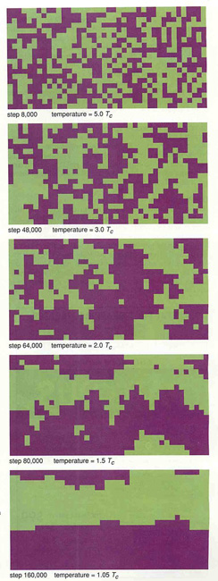
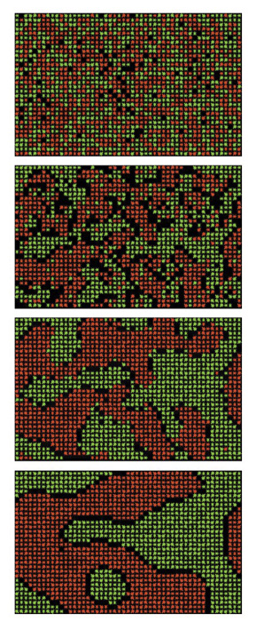
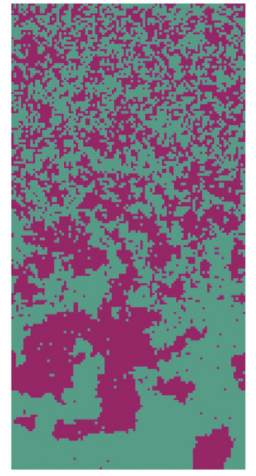
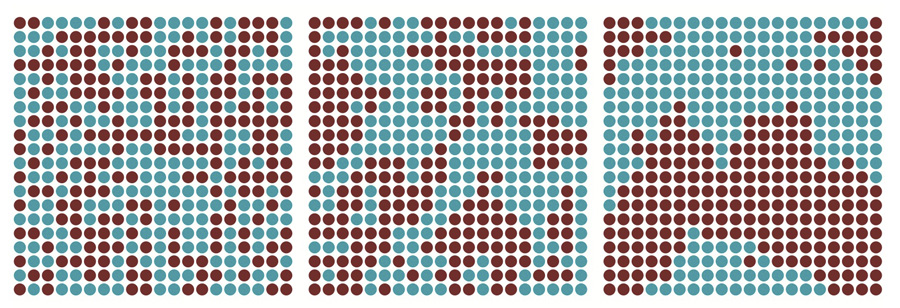
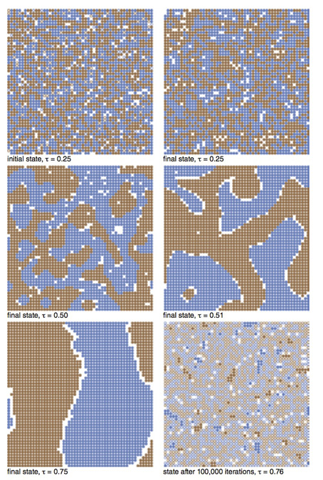

Brian Hayes
1979
1983
1991
1993
1999
2000
2004
2013
Scientific visualization comes to life.
Channeling Hans Rosling’s Gapminder
A virtual ride on the T.
Does vaccination work, you think?
Climate year by year.
Learn to fall before you learn to walk.
Pushing around a black hole.
A closer look.
/*
The Ising model of ferromagnetism.
Brian Hayes
2015-04-17
Inspired by code from Dan Schroeder, Weber State University;
http://physics.weber.edu/schroeder/software/demos/IsingModel.html
*/
(function() {
var theViz = document.getElementById("the-viz");
var theCanvas = document.getElementById("the-canvas");
var cvx = theCanvas.getContext("2d");
var theButton = document.getElementById("the-button");
theButton.onclick = doButton;
var theSlider = document.getElementById("the-slider");
theSlider.onchange = adjustTemp;
theSlider.oninput = adjustTemp;
var gridSize = 100,
gridEdge = gridSize - 1,
cellSize = theCanvas.width / gridSize,
state = 'paused',
upColor = "#d88e44",
downColor = "#412ac1",
temp = Number(theSlider.value),
timer;
// build the array of cells
var lattice = new Array(gridSize);
for (var i = 0; i < gridSize; i++) {
lattice[i] = new Array(gridSize);
}
function init() {
var i, j;
state = 'scrambled';
for (i = 0; i < gridSize; i++) {
for (j = 0; j < gridSize; j++) {
if (coinFlip()) {
lattice[i][j] = 1;
}
else {
lattice[i][j] = -1;
}
markSpin(i, j);
}
}
}
function coinFlip() {
return Math.random() < 0.5;
}
function markSpin(i, j) {
cvx.fillStyle = (lattice[i][j] === 1) ? upColor : downColor;
cvx.fillRect(i * cellSize, j * cellSize, cellSize, cellSize);
}
function updateRandomCell() {
var x, y, north, south, east, west, deltaE;
x = Math.floor(Math.random() * gridSize);
y = Math.floor(Math.random() * gridSize);
north = lattice[x][(y > 0) ? y - 1 : gridEdge];
south = lattice[x][(y < gridEdge) ? y + 1 : 0];
east = lattice[(x > 0) ? x - 1 : gridEdge][y];
west = lattice[(x < gridEdge) ? x + 1 : 0][y];
deltaE = 2 * lattice[x][y] * (north + south + east + west);
if ((deltaE <= 0) || Math.random() < Math.exp(-deltaE/temp)) {
lattice[x][y] *= -1;
markSpin(x, y);
}
}
function runBatch() {
for (i = 0; i < 1000; i++) {
updateRandomCell();
}
}
function doButton(e) {
if (state !== 'running') {
state = 'running';
this.innerHTML = "Stop";
timer = setInterval(runBatch, 1);
}
else {
state = 'paused';
clearInterval(timer);
this.innerHTML = "Go";
}
}
function adjustTemp(e) {
temp = this.value;
}
init();
})();